<title>Showcase Template Journey</title>
<meta name="claude:viewport-fit-sides" content="cover">
<link rel="preconnect" href="https://fonts.googleapis.com">
<link href="https://fonts.googleapis.com/css2?family=Saira+Stencil+One&family=IBM+Plex+Sans:wght@400;600&family=IBM+Plex+Mono:wght@400;600&display=swap" rel="stylesheet">
<style>
:root {
  /* Layout: a walk through the shard in play order; picture first on a phone, picture beside the text on a wide screen. Single dark theme by choice, so the bright mockups carry the colour. */
  --floor: #1f2124; --panel: #2c2f33; --line: #454950; --ink: #eeebe6; --muted: #b3b6bc;
  --orange: #f08a24; --cyan: #4cc9d8;
  --display: "Saira Stencil One", Impact, sans-serif;
  --body: "IBM Plex Sans", system-ui, sans-serif;
  --mono: "IBM Plex Mono", ui-monospace, monospace;
  color-scheme: dark;
}
* { box-sizing: border-box; }
body { background: var(--floor); color: var(--ink); font: 17px/1.55 var(--body); }
main { max-width: 860px; margin: 0 auto; padding-block: 28px 64px; padding-left: max(16px, env(safe-area-inset-left, 0px)); padding-right: max(16px, env(safe-area-inset-right, 0px)); display: grid; gap: 44px; grid-template-columns: minmax(0, 1fr); }
p { margin: 0; max-width: 62ch; }
img { display: block; width: 100%; height: auto; }
figure { margin: 0; min-width: 0; }
h1 { font: 44px/1.05 var(--display); color: var(--orange); margin: 0; letter-spacing: .5px; text-wrap: balance; }
h2 { font: 26px/1.15 var(--display); color: var(--orange); margin: 0; letter-spacing: .4px; text-wrap: balance; }
h3 { font: 600 20px/1.25 var(--body); margin: 0; text-wrap: balance; }
.eyebrow { font: 600 12px var(--mono); letter-spacing: .08em; text-transform: uppercase; color: var(--muted); margin: 0; }
.intro { display: grid; gap: 14px; min-width: 0; }
.lead { font-size: 19px; line-height: 1.5; }
.ch { display: grid; gap: 28px; min-width: 0; }
.chh { display: grid; gap: 4px; padding-top: 18px; border-top: 2px solid var(--orange); }
.frame { display: grid; gap: 12px; min-width: 0; }
.txt { display: grid; gap: 8px; align-content: start; min-width: 0; }
.proves { font: 13px/1.45 var(--mono); color: var(--cyan); }
.proves span { color: var(--muted); text-transform: uppercase; letter-spacing: .06em; font-size: 11px; font-weight: 600; margin-right: 6px; }
.why { display: grid; gap: 18px; min-width: 0; }
.reasons { display: grid; gap: 16px; }
.reasons div { display: grid; gap: 4px; }
blockquote { margin: 0; padding: 16px; background: var(--panel); display: grid; gap: 6px; }
blockquote p { font-size: 18px; }
cite { font: 12px var(--mono); color: var(--muted); }
.state { background: var(--panel); padding: 16px; display: grid; gap: 10px; min-width: 0; }
ul { margin: 0; padding-left: 20px; display: grid; gap: 6px; max-width: 62ch; }
a { color: var(--orange); }
.src { font: 12px/1.5 var(--mono); color: var(--muted); }
@media (min-width: 720px) {
  h1 { font-size: 56px; }
  .intro figure { max-width: 420px; }
  .frame { grid-template-columns: 340px minmax(0, 1fr); gap: 24px; }
  .txt { position: sticky; top: calc(env(safe-area-inset-top, 0px) + 20px); align-self: start; }
}
</style>
<main>
<section class="intro">
  <p class="eyebrow">Kitchen Sink v2 · a walk through the mockups</p>
  <h1>The Showcase Template</h1>
  <p class="lead">One 500 m shard that puts the engine's main features in one place, built from shared hosts and data with no custom TypeScript, and fun enough to play like a small MMO zone.</p>
  <p>This is the whole idea in one picture. The calm west is at the top, with the town and its toys. The combat east fills the bottom, with six level bands, a stealth yard and a gauntlet, and the Titan's portal sits bottom left.</p>
  <figure>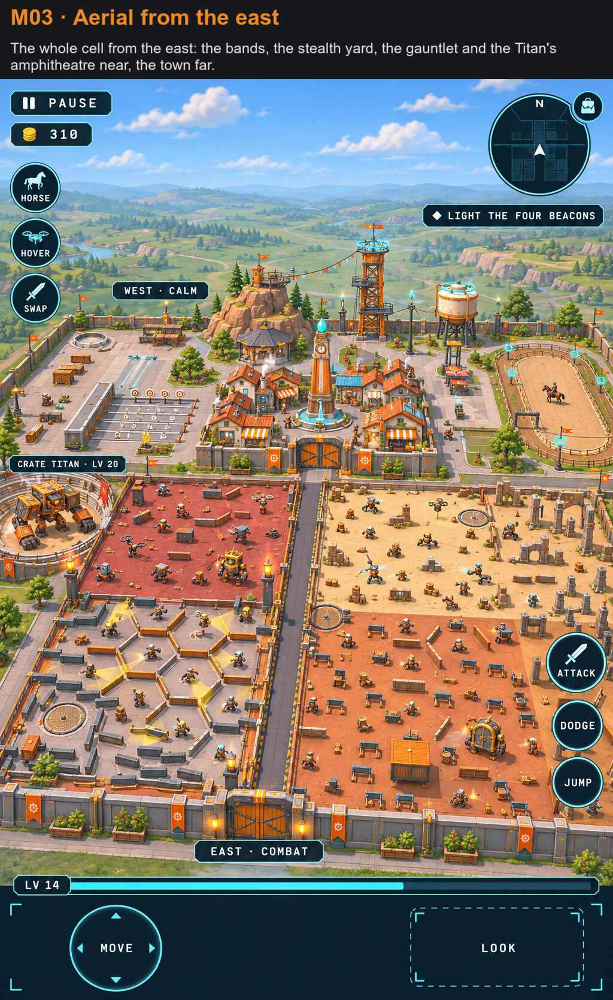</figure>
  <p class="src">These are mockups, and none of this is built yet. The HUD in them predates the 38 UI picks, so details differ: the Scrip chip beside PAUSE is cut, for one.</p>
</section>
<section class="ch"><header class="chh"><p class="eyebrow">1 · Arrive</p><h2>You start at level 1 in a walled town</h2></header>
<article class="frame"><figure>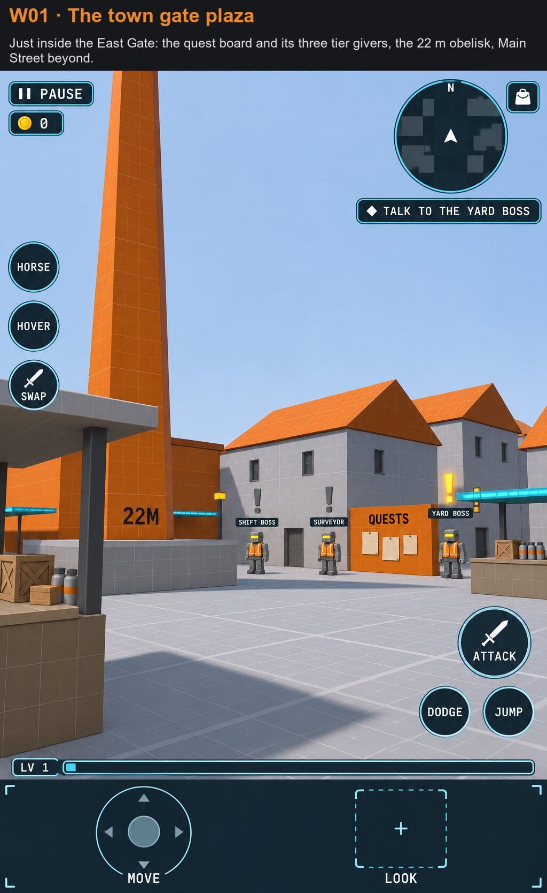</figure><div class="txt"><h3>The town gate plaza</h3><p>Three quest givers wait by the board. At level 1 only the Yard Boss wears a yellow "!". The other two are grey until you are strong enough, so you can see what is coming before you can take it.</p><p class="proves"><span>Proves</span> Quests, NPCs, dialogue, level locks</p></div></article>
<article class="frame"><figure>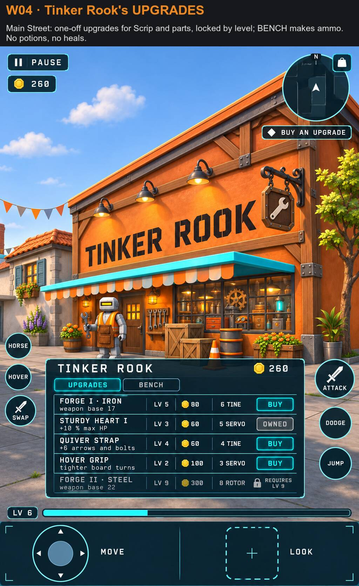</figure><div class="txt"><h3>Tinker Rook's shop</h3><p>The economy is Scrip and salvage parts. You buy one-off upgrades and Forge tiers, locked by level. There are no potions and no heals, so a fight is won by playing it well.</p><p class="proves"><span>Proves</span> Currency, shops, upgrades, level gates</p></div></article>
</section>
<section class="ch"><header class="chh"><p class="eyebrow">2 · Play</p><h2>The west half has no enemies and pays nothing</h2></header>
<article class="frame"><figure>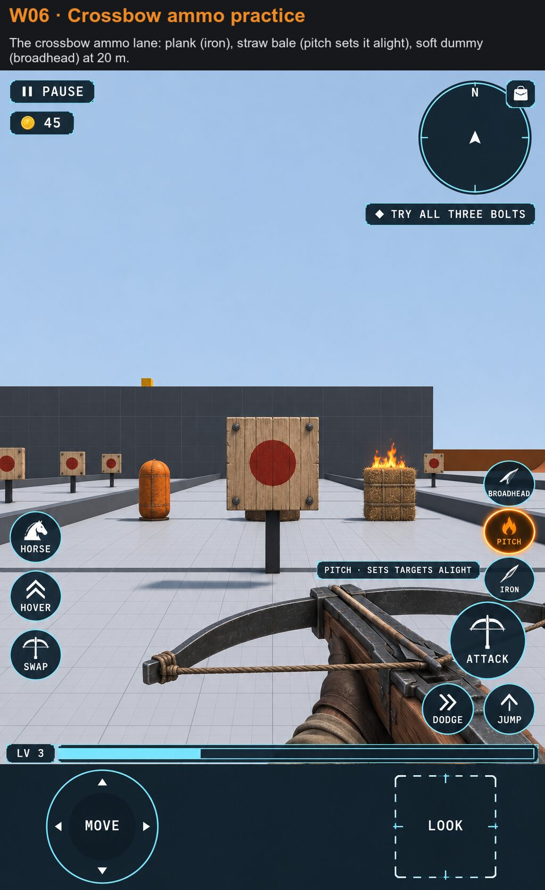</figure><div class="txt"><h3>The weapon range</h3><p>Sword, spear, bow, crossbow and lever rifle all live here. This lane tries the three crossbow bolts: iron, broadhead, and pitch, which sets a straw bale alight.</p><p class="proves"><span>Proves</span> Weapon families, ammo effects, parry</p></div></article>
<article class="frame"><figure>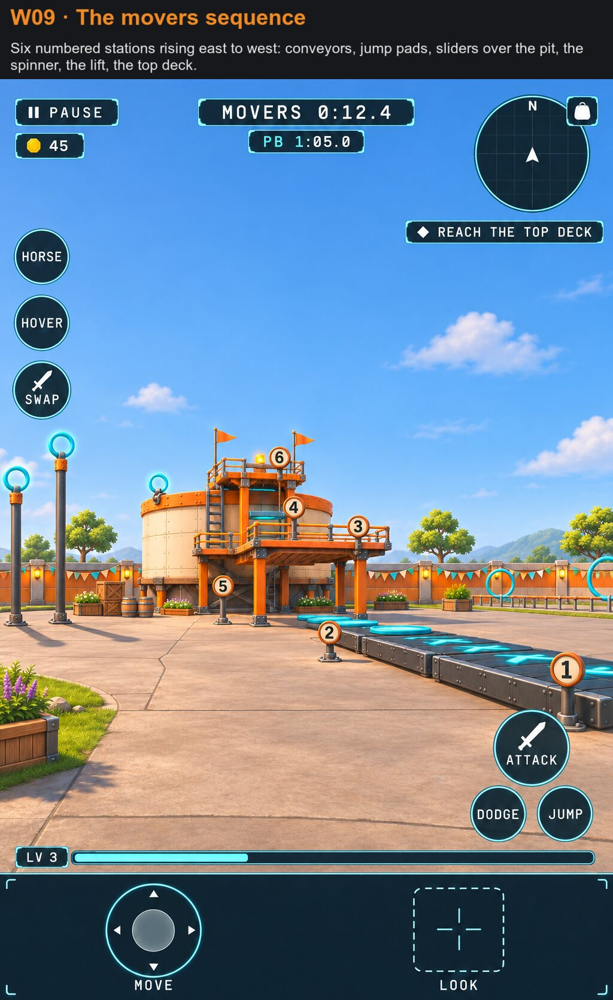</figure><div class="txt"><h3>The movers run</h3><p>Six numbered stations climb to a top deck: conveyors, jump pads, sliders over a pit, a spinner and a lift. It is timed, and your best time saves.</p><p class="proves"><span>Proves</span> Movers, conveyors, launch pads, course timer</p></div></article>
<article class="frame"><figure>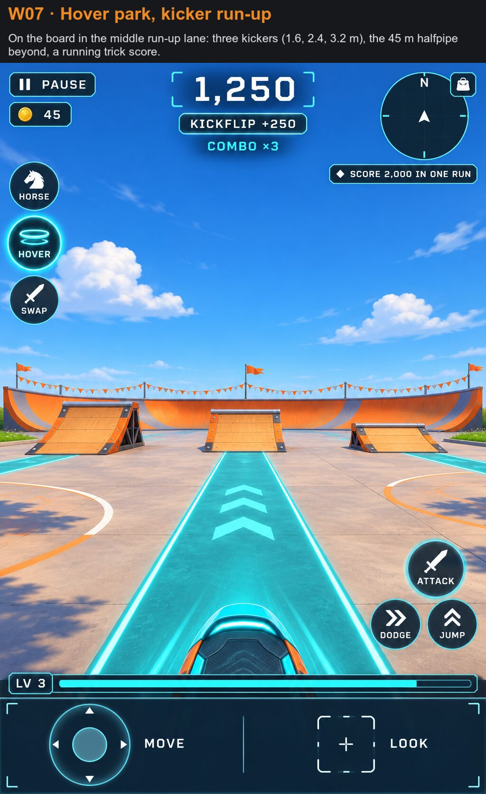</figure><div class="txt"><h3>The hover park</h3><p>Kickers, a halfpipe, rails and a bowl, with a running trick score. Kicker heights have since changed to 2.4, 3.6 and 4.8 m, because low ramps read flat from eye height.</p><p class="proves"><span>Proves</span> Board, tricks, score, grind rails</p></div></article>
<article class="frame"><figure>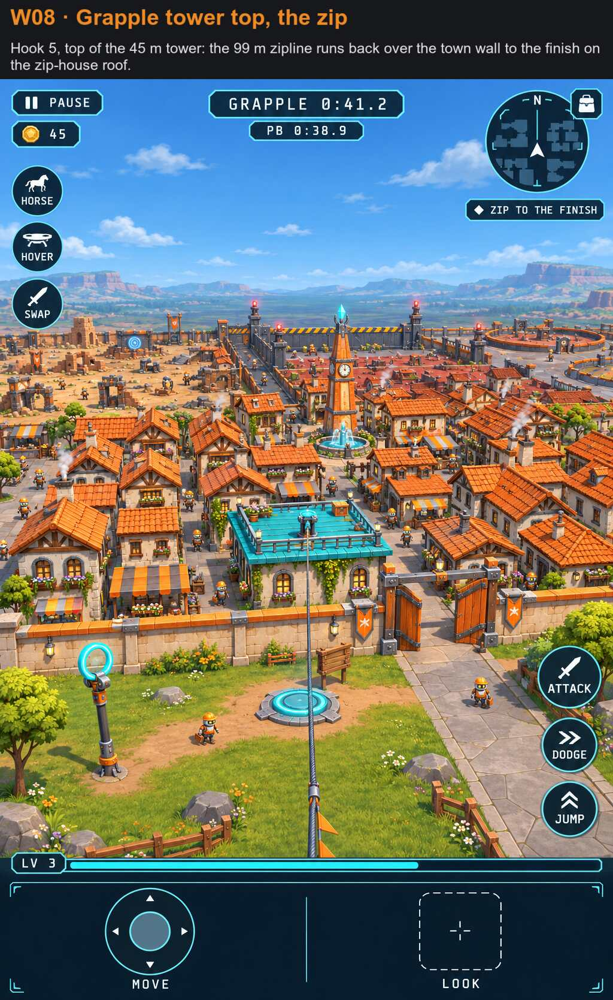</figure><div class="txt"><h3>The grapple tower and the zip</h3><p>Five hooks take you to the top of a 45 m tower, then a 99 m zipline carries you over the town wall. It is also the best view of how much is packed into one cell.</p><p class="proves"><span>Proves</span> Grapple, zipline, the 500 m cell</p></div></article>
<article class="frame"><figure>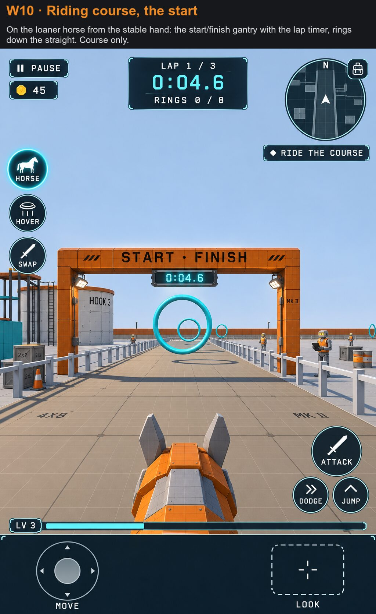</figure><div class="txt"><h3>The riding course</h3><p>A stable hand lends you a horse for this course. Eight rings, four jumps and a lap timer. There is no taming and no mounted combat here.</p><p class="proves"><span>Proves</span> Given mounts, rings, lap records</p></div></article>
</section>
<section class="ch"><header class="chh"><p class="eyebrow">3 · Cross</p><h2>One gate leads to the fighting</h2></header>
<article class="frame"><figure>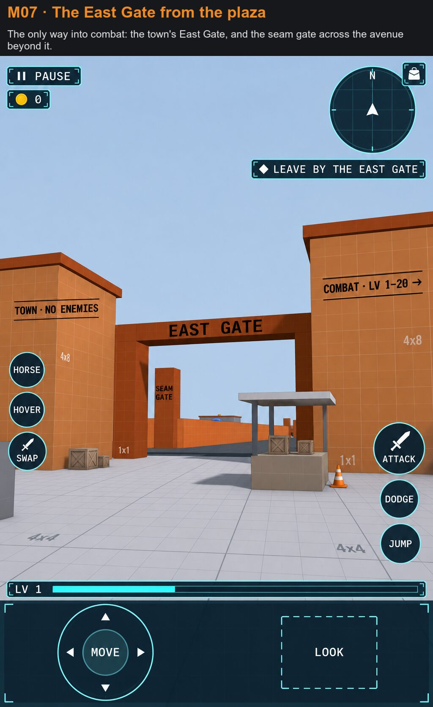</figure><div class="txt"><h3>The East Gate</h3><p>The whole shard turns on this gate. Everything behind you is calm. Everything ahead is combat, from level 1 to level 20. You can walk through at any level, and the bands get dangerous fast.</p><p class="proves"><span>Proves</span> The west and east split</p></div></article>
</section>
<section class="ch"><header class="chh"><p class="eyebrow">4 · Level</p><h2>The east plays like an MMO zone</h2></header>
<article class="frame"><figure>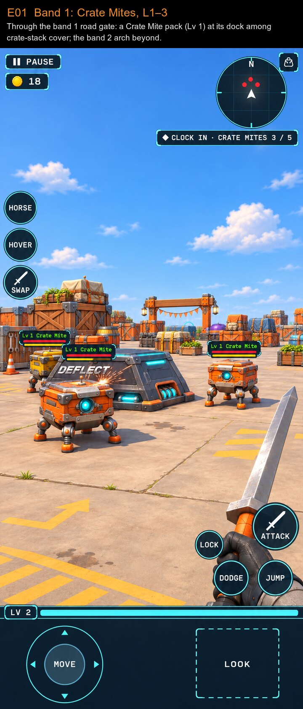</figure><div class="txt"><h3>Band 1, Crate Mites</h3><p>Six level bands run from here, each with its own robot and look. Attacks can fail on a dice roll, and a failed hit shows as a DEFLECT, a DODGE or a PARRY instead of the word MISS. At equal level 12 % of your hits fail. Eight levels above you, 90 % do.</p><p class="proves"><span>Proves</span> Levels, attributes, hit dice, packs, respawn</p></div></article>
<article class="frame"><figure>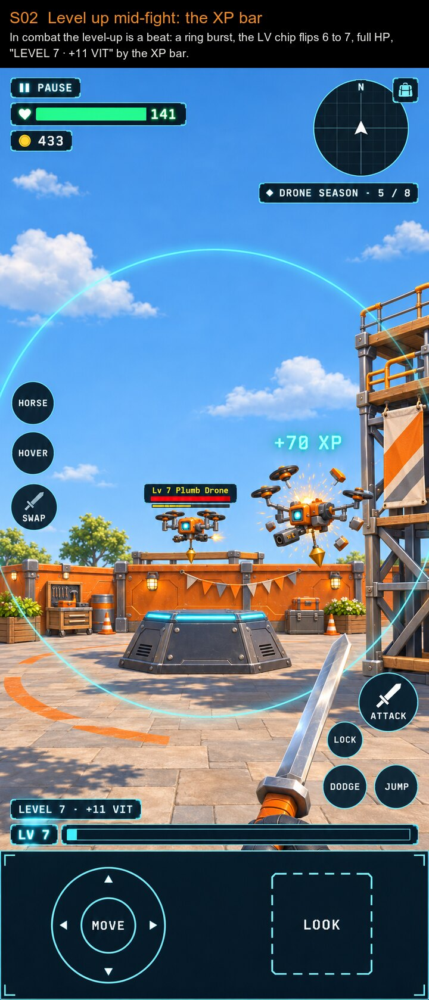</figure><div class="txt"><h3>A level-up in the middle of a fight</h3><p>XP comes only from kills. Levelling up mid-fight is a ring, a flip of the LV chip and full HP, because a card would interrupt the fight. The full card waits until you are out of combat. Attributes grow by themselves, so there is nothing to choose.</p><p class="proves"><span>Proves</span> XP, growth, combat HUD</p></div></article>
</section>
<section class="ch"><header class="chh"><p class="eyebrow">5 · Test</p><h2>Set pieces stress one system each</h2></header>
<article class="frame"><figure>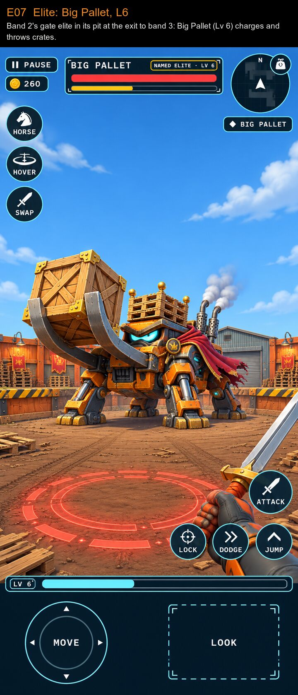</figure><div class="txt"><h3>Big Pallet, the first elite</h3><p>Elites guard the band changes. They are a soft gate: the pit is always open, and brutal if you are under-levelled. They pay trophies and finishes.</p><p class="proves"><span>Proves</span> Elite host, strikes, telegraphs, drops</p></div></article>
<article class="frame"><figure>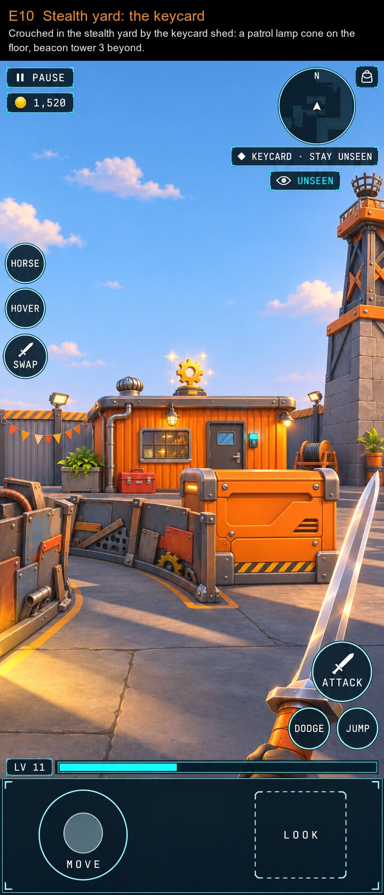</figure><div class="txt"><h3>The stealth yard</h3><p>Band 5 is walled. You crouch past patrol lamps to reach a keycard, and the HUD tells you if you are still unseen.</p><p class="proves"><span>Proves</span> Stealth, cover, patrols</p></div></article>
<article class="frame"><figure>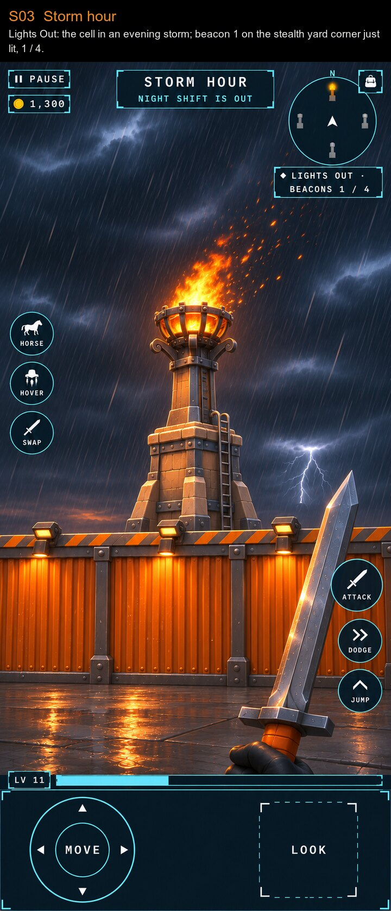</figure><div class="txt"><h3>Storm hour</h3><p>One quest turns the whole cell into an evening storm until you light four beacons. Storm counts as night, so tougher night-shift robots come out.</p><p class="proves"><span>Proves</span> Weather, day and night, world state from a quest</p></div></article>
<article class="frame"><figure>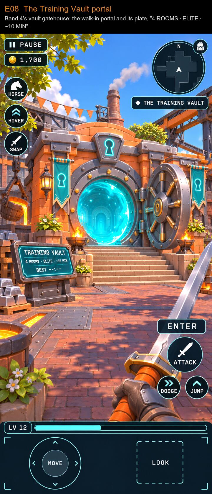</figure><div class="txt"><h3>The Training Vault</h3><p>The mini dungeon sits behind a walk-in portal: a puzzle room, a fight room, a climb and the boss. Dying restarts only the room you died in, and solved puzzles stay solved.</p><p class="proves"><span>Proves</span> Portals, interiors, sealed rooms</p></div></article>
<article class="frame"><figure>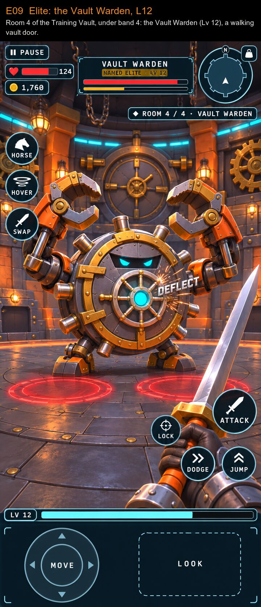</figure><div class="txt"><h3>The Vault Warden</h3><p>A walking vault door and the second band-gate elite, at level 12. It lives under band 4, inside the shard's own 500 m cube.</p><p class="proves"><span>Proves</span> Elite in an interior, the cube rule</p></div></article>
<article class="frame"><figure>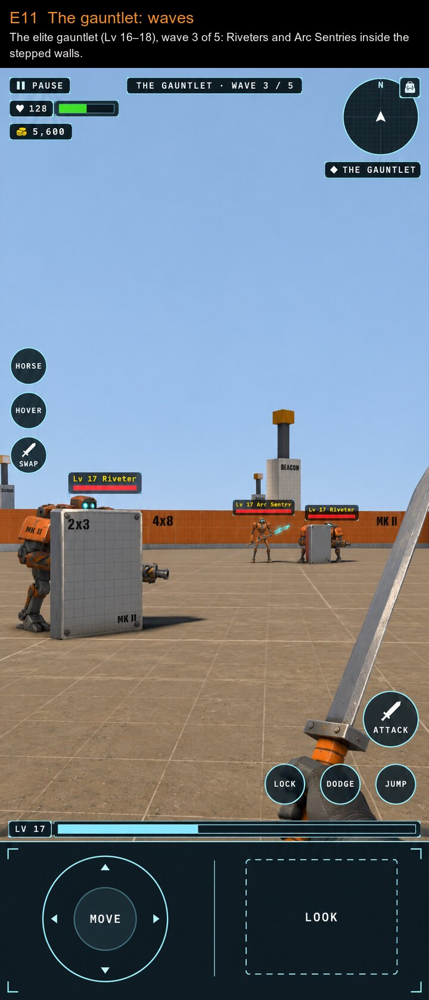</figure><div class="txt"><h3>The gauntlet</h3><p>Three sealed courts and five waves, with up to nine robots alive at once. Here the Shift Supervisor rises on a lift in wave 3. Dying restarts the court.</p><p class="proves"><span>Proves</span> Wave director, group spawns, reveal moments</p></div></article>
</section>
<section class="ch"><header class="chh"><p class="eyebrow">6 · Finish</p><h2>The last contract</h2></header>
<article class="frame"><figure>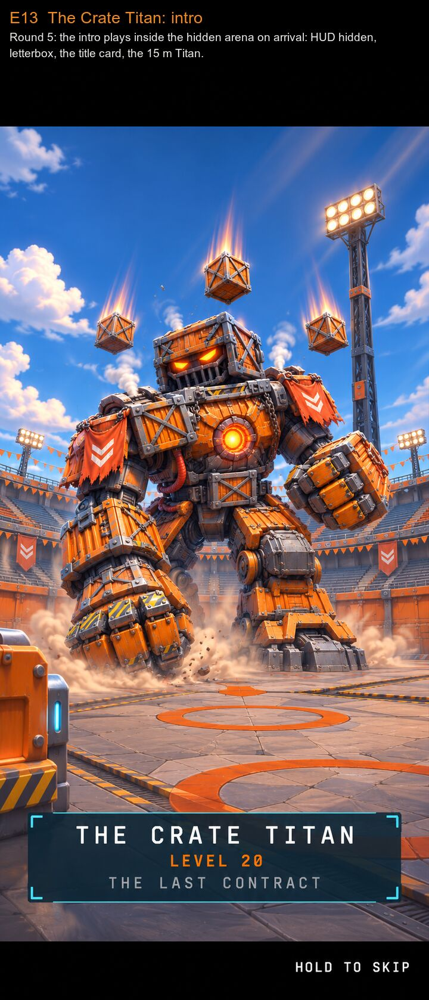</figure><div class="txt"><h3>The Crate Titan arrives</h3><p>A small gate on the surface opens a portal to a huge hidden arena deep under the shard. A 12 s in-engine cutscene plays the first time, and you can hold to skip it.</p><p class="proves"><span>Proves</span> Cutscene timeline, boss portal</p></div></article>
<article class="frame"><figure>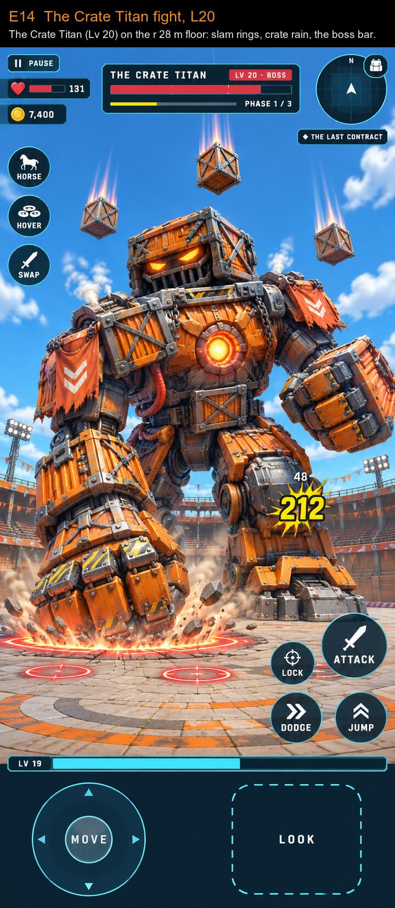</figure><div class="txt"><h3>The fight</h3><p>A 15 m Titan at level 20, in three phases, with slam rings, crate rain and Crate Mite adds. The game is first person: the figure in this mockup is only there for scale.</p><p class="proves"><span>Proves</span> One boss path, phases, hazards</p></div></article>
<article class="frame"><figure>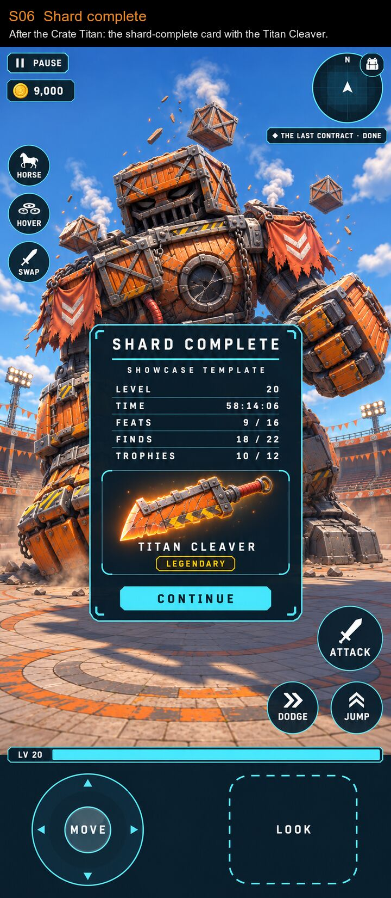</figure><div class="txt"><h3>Shard complete</h3><p>You leave with the Titan Cleaver and a card showing your time, feats, finds and trophies. A victory portal takes you back up. Reaching level 20 is a long climb, about 60 hours on the current estimate.</p><p class="proves"><span>Proves</span> Completion card, legendary reward</p></div></article>
</section>
<section class="why">
  <header class="chh"><p class="eyebrow">Why it exists</p><h2>It is the proof that the platform works</h2></header>
  <div class="reasons">
    <div><h3>It tests the main features in one place</h3><p>Each zone stresses one system, so a feature that breaks has somewhere obvious to break.</p></div>
    <div><h3>It forces the engine to be general</h3><p>The shard gets no custom TypeScript. If something can't be built from hosts, rows and AssemblyScript, the fix is a better host. That is why the same work cleans up every other shard.</p></div>
    <div><h3>It teaches the next shard</h3><p>Each zone is a self-contained, copyable part of the template's source, so the shard doubles as the recipe book.</p></div>
    <div><h3>It answers a size question</h3><p>Dungeons and arenas stack inside the cell's own cube. The Vault at y −40 and the Titan's arena at y −150 show how much fits without leaving it.</p></div>
    <blockquote><p>"You can't cheat beyond your 500 by 500 by 500 cube. You can try to pack content in there in a clever way."</p><cite>Jake, 3 Nov</cite></blockquote>
    <div><h3>It has to be fun and look finished</h3><p>The first mockups copied the grey blockout, with size labels and grid floors. Jake sent them back, so the look became a warm orange and cool grey test yard with cyan accents.</p></div>
    <blockquote><p>"What would this look like as a super fun kitchen sink showcase shard that has the simpler art style but still polished and super fun and doesn't look like placeholder shit."</p><cite>Jake, 3 Nov</cite></blockquote>
  </div>
  <div class="state">
    <h3>Where it stands</h3>
    <ul>
      <li>Planning is about 96 % decided, with 67 questions still open.</li>
      <li>Nothing is built. The plan is 87 slices and about 2,112 hours, estimated before the multi-repo move.</li>
      <li>New features now start in the new repos, so the plan needs a re-baseline first.</li>
    </ul>
    <p><a href="https://claude.ai/artifact/R3JZEyPiaPuMMQiiAqsozV">See the engine work it needs: Kitchen Sink Engine Top 20</a></p>
  </div>
</section>
</main>
